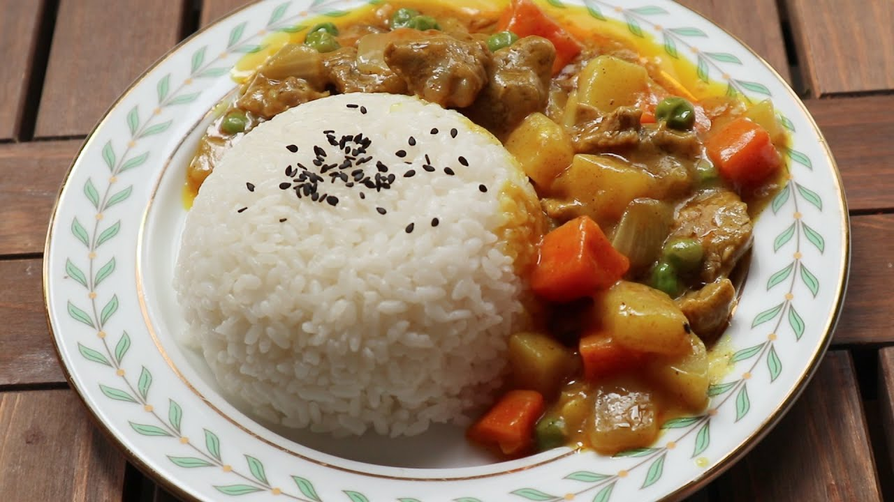
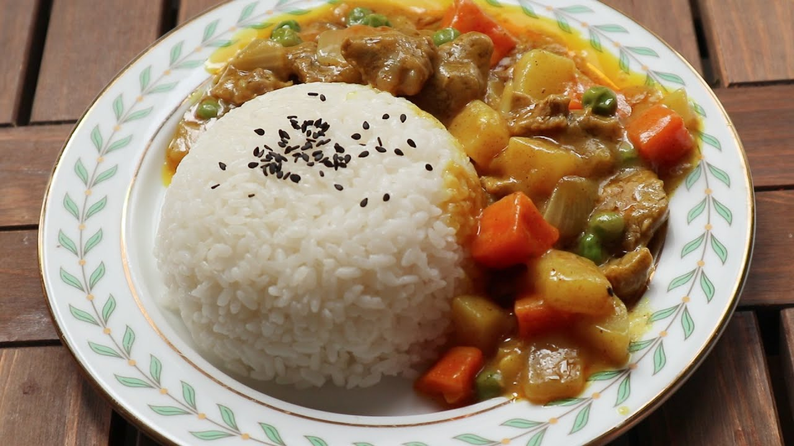
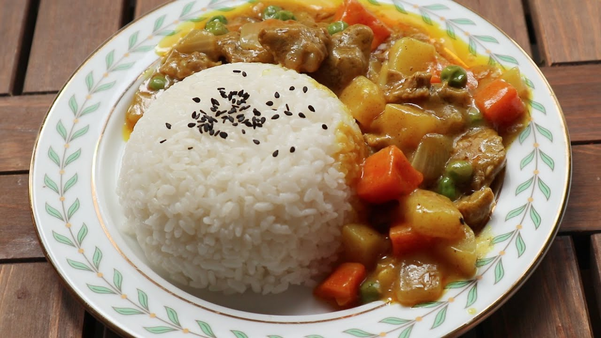

起油鍋,油熱了之後加入蛋,在鍋中用鍋鏟快速攪拌至凝国。
加入蒜末炒香之後再加入蝦仁。
再放入白飯,將白飯翻炒至米飯鬆開。
加入醬油、鹽和黑胡椒炒勻後,起鍋前再加入蔥花拌。
起鍋。

打拋豬介紹 絲瓜炒蛤蠣介紹 泰式檸檬魚介紹 心得
CMJ-所念皆星河 【纯音乐/轻音乐】
Your browser does not support the audio element. Your browser does not support the video tag.

 
